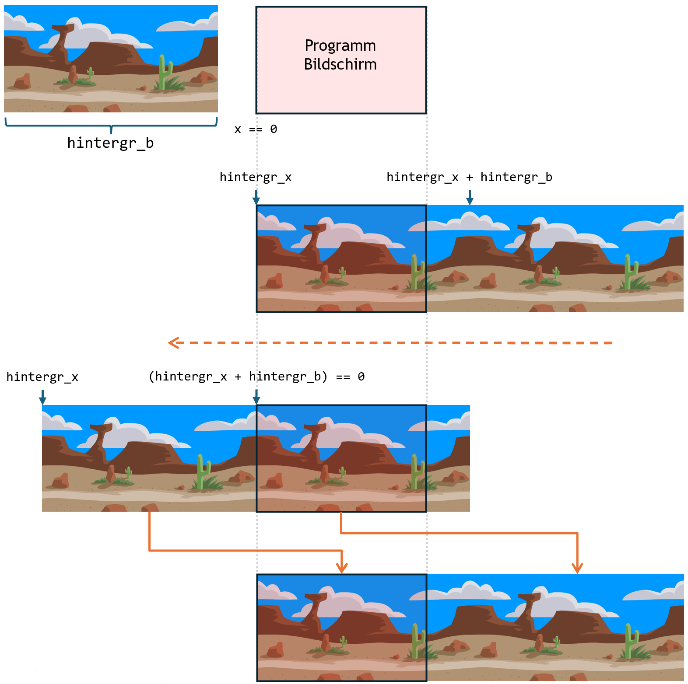

Laufender Hintergrund
Einen sich bewegenden (scrollenden) Hintergund kann man recht einfach umsetzen. Als erstes braucht man dazu ein Bild, dass man nahtlos aneinanderhängen kann. Wenn du das Bild zweimal nebeneinander legst, so soll man nicht sehen können, wo das erste Bild endet und das zweite beginnt (für horizontales scrollen - übereinander für vertikales).
In python kannst du das Bild dann wie in "ein Bild laden und anzeigen" beschrieben, laden. Hast du das Bild geladen gehst du wie folgt vor (Als beispiel automatisches horizontales Scrollen von rechts nach links): 
- Lege eine Variable an in der du dir die Bild-Position auf der x-Achse merkst (z.B.
hintergr_x = 0). - Zeichne das Bild zweimal, das erstemal an x-Position
hintergr_xund das zweite mal an x-Positionhintergr_x + hintergr_bwobeihintergr_bdie Breite des Hintergrundbildes ist.
Damit hast du das Bild zweimal nahtlos aneinander gezeichnet. - Zähle in jedem Schritt
hintergr_xeins runter (bzw. rauf für scrollen in die andere Richtung).
Prüfe danach obhintergr_x + hintergr_bkleiner oder gleich 0 ist. Trifft das zu, so ist das erste Bild komplett aus dem Bildschirm gewandert und das zweite Bild ist exakt am linken Bildschirmrand. Wenn du in dem Momenthintergr_x = -1setzt, dann startet der ganze Ablauf von neuem und man merkt nichts vom Übergang.
Um den Hintergrund langsamer oder schneller zu bewegen muss man lediglich in jedem Schritt hintergr_x weniger oder mehr verändern. Subtrahiert man z.B. nur in jedem zweiten Schleifendurchlauf eins von hintergr_x, so läuft der Hintergrund langsamer. Natürlich kann man die Bewegung anstatt automatisch auch von gedrückten Tasten oder anderen Konditionen abhängig machen und so ganz individuell scrollen.
In der Vertikalen funktioniert das analog mit einem Bild das zweimal übereinander liegt und nach oben oder unten scrollt.
Beispiel Hintergrundbild von opengameart.org